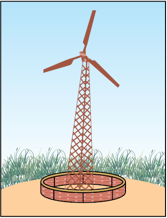

In Class IX, we learnt that the total energy during a physical or chemical process is conserved. Why, then, do we hear so much about the energy crisis? If energy can neither be created nor destroyed, we should have no worries! We should be able to perform endless activities without thinking about energy resources!
This riddle can be solved if we recall what else we learnt about energy. Energy comes in different forms and one form can be converted to another. For example, if we drop a plate from a height, the potential energy of the plate is converted mostly to sound energy when it hits the ground. If we light a candle, the process is highly exothermic so that the chemical energy in the wax is converted to heat energy and light energy on burning. What other products are obtained when we burn a candle?
The total energy during a physical or chemical process remains the same but suppose we consider the burning candle again – can we somehow put together the heat and light generated along with the products of the reaction to get back the chemical energy in the form of wax?
Let us consider another example. Suppose we take 100 mL of water which has a temperature of 348 K (75°C) and leave it in a room where the temperature is 298 K (25°C). What will happen? Is there any way of collecting all the heat lost to the environment and making the water hot once it has cooled down?
In any example that we consider, we will see that energy, in the usable form, is dissipated to the surroundings in less usable forms. Hence, any source of energy we use, to do work, is consumed and cannot be used again.
14.1 WHAT IS A GOOD SOURCE OF ENERGY?
What can then be considered a good source of energy? We, in our daily lives, use energy from various sources for doing work. We use diesel to run our trains. We use electricity to light our street-lamps. Or we use energy in our muscles to cycle to school.
Activity 14.1
The muscular energy for carrying out physical work, electrical energy for running various appliances, chemical energy for cooking food or running a vehicle all come from some source. We need to know how do we select the source needed for obtaining the energy in its usable form.
Activity 14.2
(a) in a forest?
(b) in a remote mountain village or small island?
(c) in New Delhi?
(d) lived five centuries ago?
After going through the two activities above, we can see that the particular source of energy, or fuel, we select for performing some work depends on many different factors. For example, while selecting a fuel, we would ask ourselves the following questions.
(i) How much heat does it release on burning?
(ii) Does it produce a lot of smoke?
(iii) Is it easily available?
Can you think of three more relevant questions to ask about a fuel?
Given the range of fuels we have today, what are the factors which would limit our choices when it comes to a particular task like cooking our food? Would the fuel selected also depend on the work to be done? For example, would we choose one fuel for cooking and another for heating the room in winter?
We could then say that a good source of energy would be one
QUESTIONS
1. What is a good source of energy?
2. What is a good fuel?
3. If you could use any source of energy for heating your food, which one would you use and why?
14.2 CONVENTIONAL SOURCES OF ENERGY
14.2.1 Fossil Fuels
In ancient times, wood was the most common source of heat energy. The energy of flowing water and wind was also used for limited activities. Can you think of some of these uses? The exploitation of coal as a source of energy made the industrial revolution possible. Increasing industrialisation has led to a better quality of life all over the world. It has also caused the global demand for energy to grow at a tremendous rate. The growing demand for energy was largely met by the fossil fuels – coal and petroleum. Our technologies were also developed for using these energy sources. But these fuels were formed over millions of years ago and there are only limited reserves. The fossil fuels are non-renewable sources of energy, so we need to conserve them. If we were to continue consuming these sources at such alarming rates, we would soon run out of energy! In order to avoid this, alternate sources of energy were explored. But we continue to be largely dependent on fossil fuels for most of our energy requirements (Fig. 14.1).
Figure 14.1 Pie-chart showing the major sources of energy for our requirements in India
Burning fossil fuels has other disadvantages too. We learnt in Class IX about the air pollution caused by burning of coal or petroleum products. The oxides of carbon, nitrogen and sulphur that are released on burning fossil fuels are acidic oxides. These lead to acid rain which affects our water and soil resources. In addition to the problem of air pollution, recall the green-house effect of gases like carbon dioxide.
Think it over
How would our lives change if we could no longer get electricity supply?
The availability of electrical energy to each individual in a country is one of the parameters to measure the growth of the country.
The pollution caused by burning fossil fuels can be somewhat reduced by increasing the efficiency of the combustion process and using various techniques to reduce the escape of harmful gases and ashes into the surroundings. Besides being used directly for various purposes – in gas stoves and vehicles, do you know fossil fuels are the major fuels used for generating electricity? Let us produce some electricity at our own small plant in the class and see what goes into producing our favourite form of energy.
Activity 14.3
Figure 14.2 A model to demonstrate the process of thermoelectric production
This is our turbine for generating electricity. The simplest turbines have one moving part, a rotor-blade assembly. The moving fluid acts on the blades to spin them and impart energy to the rotor. Thus, we see that basically we need to move the fan, the rotor blade, with speed which would turn the shaft of the dynamo and convert the mechanical energy into electrical energy — the form of energy which has become a necessity in today’s scenario. The various ways in which this can be done depends upon availability of the resources. We will see how various sources of energy can be harnessed to run the turbine and generate electricity in the following sections.
14.2.2 Thermal Power Plant
Large amount of fossil fuels are burnt every day in power stations to heat up water to produce steam which further runs the turbine to generate electricity. The transmission of electricity is more efficient than transporting coal or petroleum over the same distance. Therefore, many thermal power plants are set up near coal or oil fields. The term thermal power plant is used since fuel is burnt to produce heat energy which is converted into electrical energy.
14.2.3 Hydro Power Plants
Another traditional source of energy was the kinetic energy of flowing water or the potential energy of water at a height. Hydro power plants convert the potential energy of falling water into electricity. Since there are very few water-falls which could be used as a source of potential energy, hydro power plants are associated with dams. In the last century, a large number of dams were built all over the world. As we can see from Fig. 14.1, a quarter of our energy requirement in India is met by hydro power plants.
Figure 14.3 A schematic view of a hydro power plant
In order to produce hydel electricity, high-rise dams are constructed on the river to obstruct the flow of water and thereby collect water in larger reservoirs. The water level rises and in this process the kinetic energy of flowing water gets transformed into potential energy. The water from the high level in the dam is carried through pipes, to the turbine, at the bottom of the dam (Fig. 14.3). Since the water in the reservoir would be refilled each time it rains (hydro power is a renewable source of energy) we would not have to worry about hydro electricity sources getting used up the way fossil fuels would get finished one day.
But, constructions of big dams have certain problems associated with it. The dams can be constructed only in a limited number of places, preferably in hilly terrains. Large areas of agricultural land and human habitation are to be sacrificed as they get submerged. Large eco-systems are destroyed when submerged under the water in dams. The vegetation which is submerged rots under anaerobic conditions and gives rise to large amounts of methane which is also a green-house gas. It creates the problem of satisfactory rehabilitation of displaced people. Opposition to the construction of Tehri Dam on the river Ganga and Sardar Sarovar project on the river Narmada are due to such problems.
14.2.4 Improvements in the Technology for using Conventional Sources of Energy
Bio-Mass
We mentioned earlier that wood has been used as a fuel for a long time. If we can ensure that enough trees are planted, a continuous supply of fire-wood can be assured. You must also be familiar with the use of cow-dung cakes as a fuel. Given the large live-stock population in India, this can also assure us a steady source of fuel. Since these fuels are plant and animal products, the source of these fuels is said to be bio-mass. These fuels, however, do not produce much heat on burning and a lot of smoke is given out when they are burnt. Therefore, technological inputs to improve the efficiency of these fuels are necessary. When wood is burnt in a limited supply of oxygen, water and volatile materials present in it get removed and charcoal is left behind as the residue. Charcoal burns without flames, is comparatively smokeless and has a higher heat generation efficiency.
Similarly, cow-dung, various plant materials like the residue after harvesting the crops, vegetable waste and sewage are decomposed in the absence of oxygen to give bio-gas. Since the starting material is mainly cow-dung, it is popularly known as ‘gobar-gas’. Bio-gas is produced in a plant as shown in Fig. 14.4.
Figure 14.4 Schematic diagram of a bio-gas plant
The plant has a dome-like structure built with bricks. A slurry of cow-dung and water is made in the mixing tank from where it is fed into the digester. The digester is a sealed chamber in which there is no oxygen. Anaerobic micro-organisms that do not require oxygen decompose or break down complex compounds of the cow-dung slurry. It takes a few days for the decomposition process to be complete and generate gases like methane, carbon dioxide, hydrogen and hydrogen sulphide. The bio-gas is stored in the gas tank above the digester from which they are drawn through pipes for use.
Bio-gas is an excellent fuel as it contains up to 75% methane. It burns without smoke, leaves no residue like ash in wood, charcoal and coal burning. Its heating capacity is high. Bio-gas is also used for lighting. The slurry left behind is removed periodically and used as excellent manure, rich in nitrogen and phosphorous. The large-scale utilisation of bio-waste and sewage material provides a safe and efficient method of waste-disposal besides supplying energy and manure. Do you think that bio-mass is a renewable source of energy?
Wind Energy
We saw in Class IX how unequal heating of the landmass and water bodies by solar radiation generates air movement and causes winds to blow. This kinetic energy of the wind can be used to do work. This energy was harnessed by windmills in the past to do mechanical work. For example, in a water-lifting pump, the rotatory motion of windmill is utilised to lift water from a well. Today, wind energy is also used to generate electricity. A windmill essentially consists of a structure similar to a large electric fan that is erected at some height on a rigid support (Fig. 14.5).

Figure 14.5 A windmill
To generate electricity, the rotatory motion of the windmill is used to turn the turbine of the electric generator. The output of a single windmill is quite small and cannot be used for commercial purposes. Therefore, a number of windmills are erected over a large area, which is known as wind energy farm. The energy output of each windmill in a farm is coupled together to get electricity on a commercial scale.
Do You Know?
Denmark is called the country of ‘winds’. More than 25% of their electricity needs are generated through a vast network of windmills. In terms of total output, Germany is the leader, while India is ranked fifth in harnessing wind energy for the production of electricity. It is estimated that nearly 45,000 MW of electrical power can be generated if India’s wind potential is fully exploited. The largest wind energy farm has been established near Kanyakumari in Tamil Nadu and it generates 380 MW of electricity.
Wind energy is an environment-friendly and efficient source of renewable energy. It requires no recurring expenses for the production of electricity. But there are many limitations in harnessing wind energy. Firstly, wind energy farms can be established only at those places where wind blows for the greater part of a year. The wind speed should also be higher than 15 km/h to maintain the required speed of the turbine. Furthermore, there should be some back-up facilities (like storage cells) to take care of the energy needs during a period when there is no wind. Establishment of wind energy farms requires large area of land. For a 1 MW generator, the farm needs about 2 hectares of land. The initial cost of establishment of the farm is quite high. Moreover, since the tower and blades are exposed to the vagaries of nature like rain, Sun, storm and cyclone, they need a high level of maintenance.
QUESTIONS
1. What are the disadvantages of fossil fuels?
2. Why are we looking at alternate sources of energy?
3. How has the traditional use of wind and water energy been modified for our convenience?
14.3 ALTERNATIVE OR NON-CONVENTIONAL SOURCES OF ENERGY
With technological progress, our demand for energy increases day by day. Our life-styles are also changing, we use machines to do more and more of our tasks. Our basic requirements are also increasing as industrialisation improves our living standards.
Activity 14.4
(a) how did they go to school?
(b) how did they get water for their daily needs when they were young?
(c) what means of entertainment did they use?
As our demand for energy increases, we need to look for more and more sources of energy. We could develop the technology to use the available or known sources of energy more efficiently and also look to new sources of energy. Any new source of energy we seek to exploit would need specific devices developed with that source in mind. We shall now look at some of the latest sources of energy that we seek to tap, and the technology designed to capture and store energy from that source.
Think it over!
Some people say that if we start living as our ancestors, this would conserve energy and our ecosystem. Do you think this idea is feasible?
14.3.1 Solar Energy
The Sun has been radiating an enormous amount of energy at the present rate for nearly 5 billion years and will continue radiating at that rate for about 5 billion years more. Only a small part of solar energy reaches the outer layer of the earth’s atmosphere. Nearly half of it is absorbed while passing through the atmosphere and the rest reaches the earth’s surface.
Do You Know?
India is lucky to receive solar energy for greater part of the year. It is estimated that during a year India receives the energy equivalent to more than 5,000 trillion kWh. Under clear (cloudless) sky conditions, the daily average varies from 4 to 7 kWh/m2. The solar energy reaching unit area at outer edge of the earth’s atmosphere exposed perpendicularly to the rays of the Sun at the average distance between the Sun and earth is known as the solar constant. It is estimated to be approximately 1.4 kJ per second per square metre or 1.4 kW/m2.
Activity 14.5
A black surface absorbs more heat as compared to a white or a reflecting surface under identical conditions. Solar cookers (Fig. 14.6) and solar water heaters use this property in their working. Some solar cookers achieve a higher temperature by using mirrors to focus the rays of the Sun. Solar cookers are covered with a glass plate. Recall what we have learnt about the green-house effect. Does this explain why a glass plate is used?
Figure 14.6 A solar cooker
Activity 14.6
It is easy to see that these devices are useful only at certain times during the day. This limitation of using solar energy is overcome by using solar cells that convert solar energy into electricity. A typical cell develops a voltage of 0.5–1 V and can produce about 0.7 W of electricity when exposed to the Sun. A large number of solar cells are, combined in an arrangement called solar cell panel (Fig. 14.7) that can deliver enough electricity for practical use.
Figure 14.7 A solar cell panel
The principal advantages associated with solar cells are that they have no moving parts, require little maintenance and work quite satisfactorily without the use of any focussing device. Another advantage is that they can be set up in remote and inaccessible hamlets or very sparsely inhabited areas in which laying of a power transmission line may be expensive and not commercially viable.
Silicon, which is used for making solar cells, is abundant in nature but availability of the special grade silicon for making solar cells is limited. The entire process of manufacture is still very expensive, silver used for interconnection of the cells in the panel further adds to the cost. In spite of the high cost and low efficiency, solar cells are used for many scientific and technological applications. Artificial satellites and space probes like Mars orbiters use solar cells as the main source of energy. Radio or wireless transmission systems or TV relay stations in remote locations use solar cell panels. Traffic signals, calculators and many toys are fitted with solar cells. The solar cell panels are mounted on specially designed inclined roof tops so that more solar energy is incident over it. The domestic use of solar cells is, however, limited due to its high cost.
14.3.2 Energy from the Sea
Tidal Energy
Due to the gravitational pull of mainly the moon on the spinning earth, the level of water in the sea rises and falls. If you live near the sea or ever travel to some place near the sea, try and observe how the sea-level changes during the day. This phenomenon is called high and low tides and the difference in sea-levels gives us tidal energy. Tidal energy is harnessed by constructing a dam across a narrow opening to the sea. A turbine fixed at the opening of the dam converts tidal energy to electricity. As you can guess, the locations where such dams can be built are limited.
Wave Energy
Similarly, the kinetic energy possessed by huge waves near the sea-shore can be trapped in a similar manner to generate electricity. The waves are generated by strong winds blowing across the sea. Wave energy would be a viable proposition only where waves are very strong. A wide variety of devices have been developed to trap wave energy for rotation of turbine and production of electricity.
Ocean Thermal Energy
The water at the surface of the sea or ocean is heated by the Sun while the water in deeper sections is relatively cold. This difference in temperature is exploited to obtain energy in ocean-thermal-energy conversion plants. These plants can operate if the temperature difference between the water at the surface and water at depths up to 2 km is 20 K (20°C) or more. The warm surface-water is used to boil a volatile liquid like ammonia. The vapours of the liquid are then used to run the turbine of generator. The cold water from the depth of the ocean is pumped up and condense vapour again to liquid.
The energy potential from the sea (tidal energy, wave energy and ocean thermal energy) is quite large, but efficient commercial exploitation is difficult.
14.3.3 Geothermal Energy
Due to geological changes, molten rocks formed in the deeper hot regions of earth’s crust are pushed upward and trapped in certain regions called ‘hot spots’. When underground water comes in contact with the hot spot, steam is generated. Sometimes hot water from that region finds outlets at the surface. Such outlets are known as hot springs. The steam trapped in rocks is routed through a pipe to a turbine and used to generate electricity. The cost of production would not be much, but there are very few commercially viable sites where such energy can be exploited. There are number of power plants based on geothermal energy operational in New Zealand and United States of America.
14.3.4 Nuclear Energy
How is nuclear energy generated? In a process called nuclear fission, the nucleus of a heavy atom (such as uranium, plutonium or thorium), when bombarded with low-energy neutrons, can be split apart into lighter nuclei. When this is done, a tremendous amount of energy is released if the mass of the original nucleus is just a little more than the sum of the masses of the individual products. The fission of an atom of uranium, for example, produces 10 million times the energy produced by the combustion of an atom of carbon from coal. In a nuclear reactor designed for electric power generation, such nuclear ‘fuel’ can be part of a self-sustaining fission chain reaction that releases energy at a controlled rate. The released energy can be used to produce steam and further generate electricity.
Do You Know
In a nuclear fission, the difference in mass, ∆m, between the original nucleus and the product nuclei gets converted to energy E at a rate governed by the famous equation,
E = ∆m c2,
first derived by Albert Einstein in 1905, where c is the speed of light in vacuum. In nuclear science, energy is often expressed in units of electron volts (eV): 1 eV = 1.602 × 10–19 joules. It is easy to check from the above equation that 1 atomic mass unit (u) is equivalent to about 931 mega electron volts (MeV) of energy.
Nuclear power reactors located at Tarapur (Maharashtra), Rana Pratap Sagar (Rajasthan), Kalpakkam (Tamil Nadu), Narora (UP), Kakrapar (Gujarat) and Kaiga (Karnataka) have the installed capacity of less than 3% of the total electricity generation capacity of our country. However, many industrialised countries are meeting more than 30% of their electrical power needs from nuclear reactors.
The major hazard of nuclear power generation is the storage and disposal of spent or used fuels – the uranium still decaying into harmful subatomic particles (radiations). Improper nuclear-waste storage and disposal result in environmental contamination. Further, there is a risk of accidental leakage of nuclear radiation. The high cost of installation of a nuclear power plant, high risk of environmental contamination and limited availability of uranium makes large-scale use of nuclear energy prohibitive.
Nuclear energy was first used for destructive purposes before nuclear power stations were designed. The fundamental physics of the fission chain reaction in a nuclear weapon is similar to the physics of a controlled nuclear reactor, but the two types of device are engineered quite differently.
Do You know!
Nuclear fusion
Currently all commercial nuclear reactors are based on nuclear fission. But there is another possibility of nuclear energy generation by a safer process called nuclear fusion. Fusion means joining lighter nuclei to make a heavier nucleus, most commonly hydrogen or hydrogen isotopes to create helium, such as
2H + 2H → 3He (+ n)
It releases a tremendous amount of energy, according to the Einstein equation, as the mass of the product is little less than the sum of the masses of the original individual nuclei.
Such nuclear fusion reactions are the source of energy in the Sun and other stars. It takes considerable energy to force the nuclei to fuse. The conditions needed for this process are extreme – millions of degrees of temperature and millions of pascals of pressure.
The hydrogen bomb is based on thermonuclear fusion reaction. A nuclear bomb based on the fission of uranium or plutonium is placed at the core of the hydrogen bomb. This nuclear bomb is embedded in a substance which contains deuterium and lithium. When the nuclear bomb (based on fission) is detonated, the temperature of this substance is raised to 107 K in a few microseconds. The high temperature generates sufficient energy for the light nuclei to fuse and a devastating amount of energy is released.
Activity 14.7
Questions
1. What kind of mirror – concave, convex or plain – would be best suited for use in a solar cooker? Why?
2. What are the limitations of the energy that can be obtained from the oceans?
3. What is geothermal energy?
4. What are the advantages of nuclear energy?
14.4 ENVIRONMENTAL CONSEQUENCES
We have studied various sources of energy in the previous sections. Exploiting any source of energy disturbs the environment in some way or the other. In any given situation, the source we would choose depends on factors such as the ease of extracting energy from that source, the economics of extracting energy from the source, the efficiency of the technology available and the environmental damage that will be caused by using that source. Though we talk of ‘clean’ fuels like CNG, it would be more exact to say that a particular source is cleaner than the other. We have already seen that burning fossil fuels causes air pollution. In some cases, the actual operation of a device like the solar cell may be pollution-free, but the assembly of the device would have caused some environmental damage. Research continues in these areas to produce longer lasting devices that will cause less damage throughout their life.
Activity 14.8
• Gather information about various energy sources and how each one affects the environment.
• Debate the merits and demerits of each source and select the best source of energy on this basis.
Questions
1. Can any source of energy be pollution-free? Why or why not?
2. Hydrogen has been used as a rocket fuel. Would you consider it a cleaner fuel than CNG? Why or why not?
14.5 HOW LONG WILL AN ENERGY SOURCE LAST US?
We saw earlier that we cannot depend on the fossil fuels for much longer. Such sources that will get depleted some day are said to be exhaustible sources or non-renewable sources of energy. On the other hand, if we manage bio-mass by replacing the trees we cut down for fire-wood, we can be assured of a constant supply of energy at a particular rate. Such energy sources that can be regenerated are called renewable sources of energy.
Renewable energy is available in our natural environment, in the form of some continuing or repetitive currents of energy, or is stored in such large underground reservoirs that the rate of depletion of the reservoir because of extraction of usable energy is practically negligible.
Activity 14.9
(a) The estimated coal reserves are said to be enough to last us for another two hundred years. Do you think we need to worry about coal getting depleted in this case? Why or why not?
(b) It is estimated that the Sun will last for another five billion years. Do we have to worry about solar energy getting exhausted? Why or why not?
QUESTIONS
1. Name two energy sources that you would consider to be renewable. Give reasons for your choices.
2. Give the names of two energy sources that you would consider to be exhaustible. Give reasons for your choices.
What We Have Learnt
Exercises
1. A solar water heater cannot be used to get hot water on
(a) a sunny day. (b) a cloudy day.
(c) a hot day. (d) a windy day.
2. Which of the following is not an example of a bio-mass energy source?
(a) wood (b) gobar-gas
(c) nuclear energy (d) coal
3. Most of the sources of energy we use represent stored solar energy. Which of the following is not ultimately derived from the Sun’s energy?
(a) geothermal energy (b) wind energy
(c) nuclear energy (d) bio-mass.
4. Compare and contrast fossil fuels and the Sun as direct sources of energy.
5. Compare and contrast bio-mass and hydro electricity as sources of energy.
6. What are the limitations of extracting energy from—
(a) the wind? (b) waves? (c) tides?
7. On what basis would you classify energy sources as
(a) renewable and non-renewable?
(b) exhaustible and inexhaustible?
Are the options given in (a) and (b) the same?
8. What are the qualities of an ideal source of energy?
9. What are the advantages and disadvantages of using a solar cooker? Are there places where solar cookers would have limited utility?
10. What are the environmental consequences of the increasing demand for energy? What steps would you suggest to reduce energy consumption?